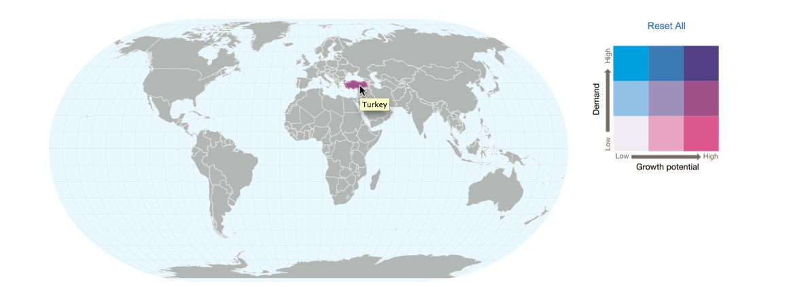
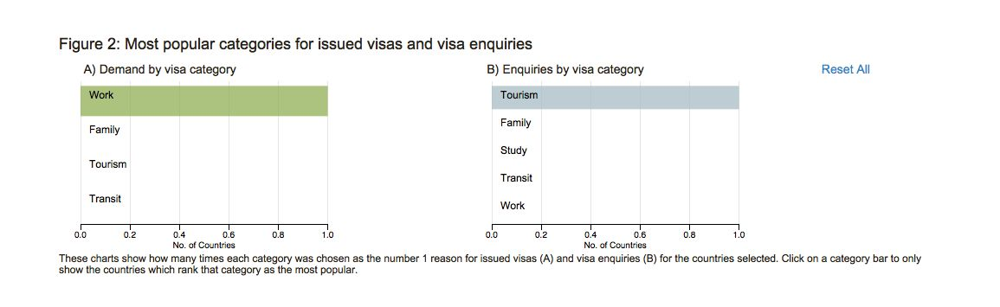
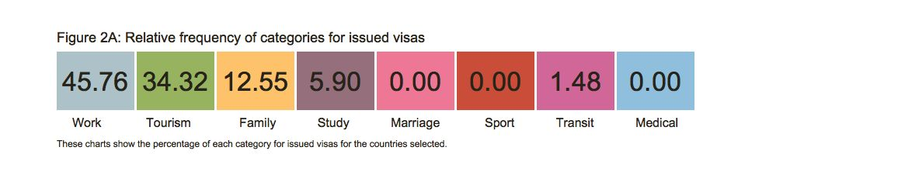
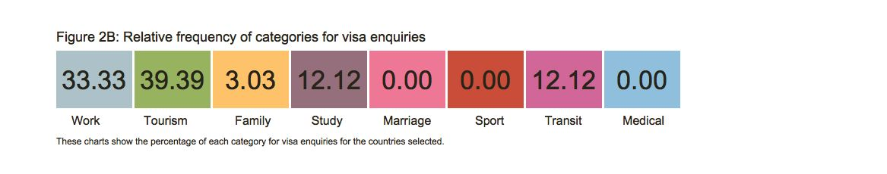

Exploring the world-wide demand for visiting UK
First look at the concordance between the issued visas and the enquiries on visas. Globally, the UKVI offers a wide range of visas typically including those for tourism, family, work etc.
The objective is to discover countries where there exists a discordance between the visa categories that customers enquire about and the visas that are issued before a passenger enters the UK.
The hypothesis is that regions of discordance are regions that need better tailoring of visa services.
The data on issued visas are derived from the International Passenger Survey (IPS) 2012-2013.
While, the information on enquiries is sourced from the Google Analytics data from the Check if you need a UK visa webpage.
Caveats
The IPS data is a sample and as with any sample, the assumption is that the conclusions derived from it can be extrapolated to the general population. In addition, for the purposes of estimating the current demand for different visas, the reason for travel cited by the passenger, in the IPS is used as a surrogate for the visa category on which the passenger is travelling. Additionally, having begun in February 2014, the Check if you need a UK visa service is relatively new. Hence, the current information on enquiries is limited. A better picture around enquiries will undoubtedly emerge as more data become available.
A Data Story
A leading benefit of an interactive visualisation is the ability to uncover patterns that may have otherwise been overlooked. Here, we present the example of Turkey as a region with potential for growth in the number of tourists to the UK.
Turkey, as noted from it's colour on the dual-scale choropleth map, is an area with high growth potential and comparatively lower current demand.
Looking at the next chart, the statistically significant, rank correlation suggests a good agreement between the current demand and the enquiries from Turkish citizens, across all visa categories.

However, on examining the popularity of different visa categories, we uncover a discordance that requires further investigation. Amongst the 271 Turkish nationals surveyed through the IPS, a majority have cited work as their reason for travel. Assuming they have all been granted a work visa before travelling to the UK, it can be concluded that the work visa category is the most requested for in Turkey.
On the other hand, out of the 33 enquiries received, between Feb-May 2014, from Turkish nationals on the Check if you need a UK visa service webpage, a majority chose tourism as their intended reason for travel to the UK. This pattern would imply, that a growing number of Turkish nationals are considering UK as a holiday destination. Thus, this potential for growth in tourist numbers to the UK from Turkey can be harnessed favourably. However, since the number of enquiries is small, more data should be collected to establish this as a pattern over time.
The final two charts display the percentage of demand or enquiry broken down by visa category. The transition from the demand for work visas to an increase in interest in tourist visas is reflected in the figures shown in the charts below.

In conclusion, the current data suggests a potential for increasing the number of tourists arriving from Turkey. Further investigation on more extensive data is needed to establish whether this is a long-term pattern and if so, can measures be taken to harness this pattern favourably for the UK.
Other Key Observations
- Out of the 240 countries analysed, 8 of them have both high current demand and a high number of enquiries. These are Australia, Canada, China, Russia, India, Japan, Nigeria and USA.
- Australia, which has a high demand and a high number of enquiries, does not have a significant correlation which implies that the enquiries do not match the reasons people cite for travel to the UK.
- Brazilian nationals have shown an increasing interest in study visas. This is a shift from the current trend of visiting the UK primarily for tourism.
- Some countries have a negative correlation between enquiries and demand for visas. While the relationship is not statistically significant, further investigation is recommended to establish the true pattern. A negative correlation would imply a serious discordance in the visa categories enquired about and applied for. Theoretically, it would also be possible to uncover loop holes in the visa services through in-depth investigation of enquries and demand anomalies.
Conclusion and Recommendation
A joint examination of enquiry and demand is akin to an analysis of supply and demand. In the case of visas, such an analysis helps in understanding the broader picture of where more supply is needed and areas where better tailoring of services can be achieved. Through this short piece of analysis, regions of potential growth such as Turkey, have been uncovered. The key recommendation would be to repeat the analysis on data more specific to visa applications and more information regarding enquiries. Undoubtedly, there will be more interesting patterns to uncover that could provide invaluable guidance in drafting strategies around visas.